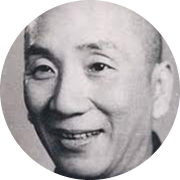

|  | yip manest un grand maître chinois de wing chun,art martial chinois. Il a étudié le wing chun auprès de Chan Wah-shun, Ng Chung-sok et Leung Bik. Il a fondé à Foshan un centre de formation aux arts martiaux, devenu aujourd'hui une sorte de musée. Plus tard, il a tenu des écoles à Hong Kong. Il est l'un des maîtres de Bruce Lee. |
|
|
| détails | déscription |
|---|---|
| Nationalité | Chinoise |
| Profession | Officier de Police |